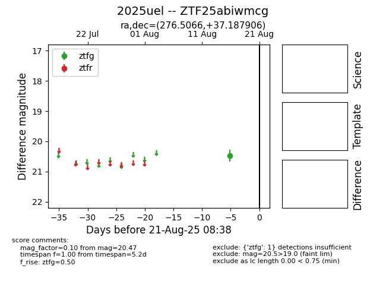

Target 2025uel at 2025-08-21 11:20, see:
FINK: fink-portal.org/ZTF25abiwmcg
Lasair: lasair-ztf.lsst.ac.uk/objects/ZTF25abiwmcg
ALeRCE: alerce.online/object/ZTF25abiwmcg
TNS: wis-tns.org/object/2025uel
YSE: ziggy.ucolick.org/yse/transient_detail/2025uel
alt names
ZTF25abiwmcg (ztf,alerce)
2025uel (tns,yse)
coordinates:
equatorial (ra, dec) = (276.5066,+37.18791)
galactic (l, b) = (65.0873,+20.73610)
photometry
last ztfg=20.47
1 ztfg detections
